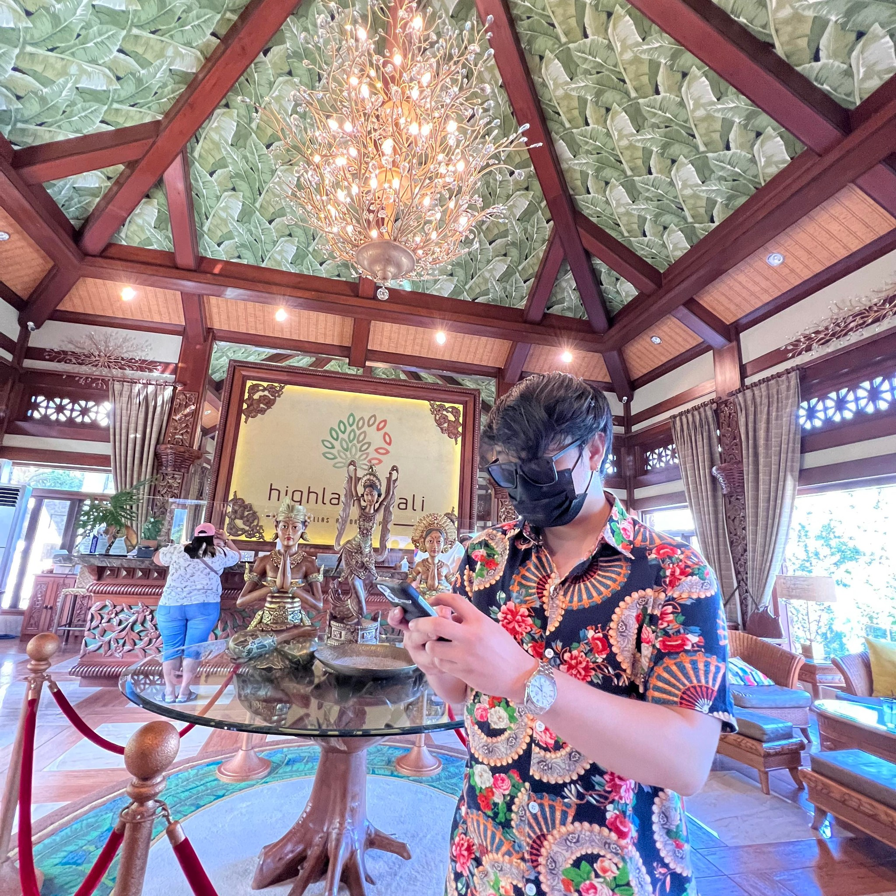

Julius John Roel C. Ortiz
QA Automation Engineer / FullStack Web Developer
37 Anonas Street, Project 2.
Quezon City, Quirino 2-A
Objective/Summary:
Experienced QA Automation Engineer with background writing manual test cases and automated test scripts. Capable of training new testers, reviewing work and optimizing processes. Knowledgeable about working alongside developers and project managers to uncover and correct problems in advance of releases.
Education:
- FEU-Institute of Technology 2013-2018
- TESDA Web Development 2020-2021
Work Experience:
- Dice205 Digital Corporation, Mandaluyong City - QA Engineer(Manual/Automation)
2018 - 2020
-
Created automated test scripts using Selenium and Appium
-
Gathered data on integration issues and vulnerabilities and reported all
findings, including improvement recommendations.
-
Collaborated with developers and project managers to assess program
capabilities, features and testing demands.
- Freelance Front-end Developer, Manila
2019 - Current
-
Consulted with customers to gather requirements and discuss design choices.
-
Produced websites compatible with multiple browsers. findings, including improvement recommendations.
-
Tested websites and performed troubleshooting prior to deployment.
-
IGEN Payment Systems, Makati City - QA Automation Engineer Android Embedded Application(Pioneer/Team lead)
2020 - 2021
-
Developed android embedded automation framework from scratch
-
Trained manual testers to execute automations
-
Created custom code automation framework to fit in payment systems
functional specifications
-
Created custom python code for dobot arm movement for card swipe,tap
and insert actions.
-
Collabera, Makati City(Cebu Pacific Air) - Senior QA Automation Engineer - iOS/Web Cebu Pacific Booking Application
2021 - Current
-
Developed iOS automation framework from scratch
-
Trained manual testers to execute automation scripts
-
Conducted trainings for manual testers to utilize gherkins to fit in with
their testings
-
Created custom scripts for iOS Simulator/Actual devices